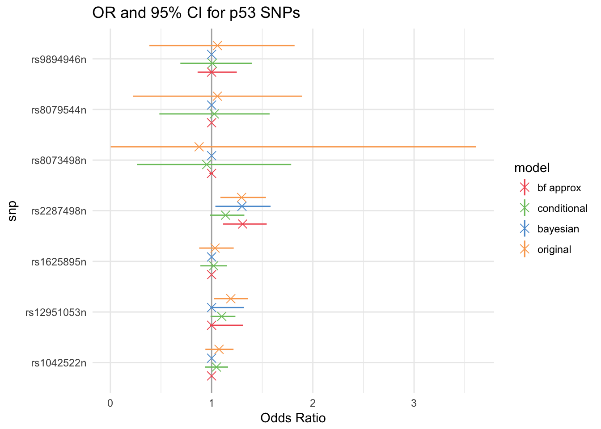
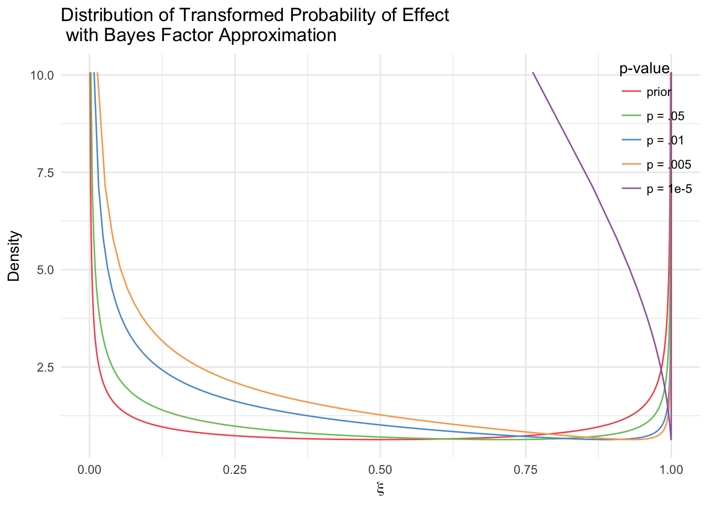

Chapter 2 Models
Following the structure of the motivating example, consider a binary dataset describing an event such as whether or not someone has ovarian cancer. This data is collected across different sites, which may have different sampling procedures (as well as simply different populations). The mean effect for each site can be thought of as normally distributed around a global effect if this exists. This is the alternative hypothesis. The null hypothesis is that there is no global effect. This also means that there must not be a site effect. We are interested in two things: whether or not there is a global effect (hypothesis testing), and what the effect’s size is (inference). Let \(Y_{ij}\) be the observed data. The \(j\) index corresponds to the site to which the observation belongs.
\[P(Y_{ij}=1| \beta_j) = \textsf{logit}^{-1}(\beta_{j})\\ \beta_{j}|\mu, \sigma^2,H_1 \sim \textsf{N}(\mu, \sigma^{2})\\ \beta_{j}|H_0 = 0\]
In the case where we have multiple sites’ information, we can use this hierarchical model, but if we only have data from one discovery site, then the site effect becomes meaningless, and we can use the following model:
\[P(Y_{i}=1|\mu) = \textsf{logit}^{-1}(\mu)\]
We propose three different Bayesian approaches:
A fully Bayesian mixed effects hierarchical model that can jointly perform significance testing and effect estimation. By combining the testing and estimate steps, we can overcome the winner’s curse and account for the uncertainty that arises when selecting an SNP. This model builds on Xu et al., and Jiang et al., which introduce the spike-and-slab prior, with the addition of random effects to account for heterogeneity between sites.
A conditional likelihood model that can take into account the probability of finding a significant result in the discovery sites when estimating effect size. This model incorporates the conditional likelihood introduced by Zollner and Pritchard as well as Zhong and Prentice, and Ghosh et al.) and incorporates it into the Bayesian hierarchical framework.
A Bayes factor-based model that uses an upper bound on the Bayes factor from the discovery sites, which is more reliable than the p-value (Benjamin et al., 2017) to quantify the uncertainty of the significant result.
While the first approach is truly Bayesian and requires all the data, the second and third can be used as long as the sufficient statistics (MLE, SE, p-value, \(\alpha\)) are available.
2.1 Fully Bayesian Model
Let \(\delta_a(x)\) be the Dirac delta function: \(\delta_a(x) = 1\) for \(x = a\) and \(\delta_a(x)=0\) otherwise. Then, \(P( \mu|H_0) = \delta_0 ( \mu )\), and \(P( \mu|H_1) = N(0,1)\) or some other diffuse prior. We can define a hyperparameter \(\xi\) such that \(P(H_1) = \xi\). This gives rise to a latent variable drawn from a Bernoulli(\(\xi\)), which is equivalent to selecting \(H_1\) or \(H_0\).
Site means \(\beta_{j}|\mu, \sigma^2,H_1 \sim N(\mu, \sigma^2)\), and \(\beta_{j}|H_0 = 0\). In this case the prior for \(\mu| H_1\) was chosen to be a Cauchy distribution. The prior for \(\sigma\) was a truncated Cauchy, with support only on the positive real line. The prior for \(\xi\), the probability of the alternative, was a Beta distribution.
The complete model is as follows:
\[\beta_{j}|H_ 1 \sim \textsf{N}(\mu, \sigma_{\beta}^{2}) \\ \mu|H_1\sim \textsf{Cauchy}(0,\sigma_{\mu}^{2})\\ \mu, \beta_{j}|H_0 =0\\ \sigma_{\beta}\sim \textsf{Cauchy}^+(0,\sigma_{\sigma}^{2})\\ H\sim \textsf{Bernoulli}(\xi)\\ \xi \sim \textsf{Beta}(a, b)\]
If we only consider discovery data from one site, this model becomes the same as the one proposed by Xu et al. with slightly different priors.
There is no difference between discovery and validation sites in the Bayesian framework. Even considering them separately, one could consider the posterior distributions of the parameters given only discovery site data as the priors given the validation data, which would result in exactly the same results.
2.2 Conditional Likelihood
In this case, the results from the discovery sites are used as a prior for the validation data analysis, which is why only the sufficient statistics are needed.
Given the discovery sites’ MLE and SE, we can use the CLT and definition of MLE to state that \(\text{MLE}_i \sim N(\beta_i, \text{SE}_i)\). Let \(B\) indicate that the data is significant at the level \(\alpha\). The conditional likelihood is \[L(\mu | B) = \frac{p(Y| \mu)p(B| Y,\mu)}{p(B|\mu)} = \frac{p(Y| \mu)}{\int_{\textsf{significant Y}} p(t| \mu) dt }\]
Conditioning on finding a significant estimate using a Normal approximation, \[p(\text{MLE}_i | B,\beta_i,\text{SE}_i,q_i) = \frac{\phi(\text{MLE}_i, \beta_i, \text{SE}_i)}{\Phi(-q_i, \beta_i, \text{SE}_i)+1-\Phi(q_i, \beta_i, \text{SE}_i)}\] where \(\phi(x, \beta_i, \sigma)\) is the pdf of a normal distribution with mean \(\beta_i\) and variance \(\sigma^2\), and \(\Phi(x, \beta_i, \sigma)\) is the cdf of the same distribution. The value of \(q_i\) is \(\Phi^{-1}(1-\frac{\alpha}{2}, 0 ,\text{SE}_i)\), where \(\alpha\) is the power of the test (i.e. p-values that are smaller than \(\alpha\) are considered significant). This is cutoff for an MLE value to be considered significant. Let the conditional likelihood of \(\text{MLE}_i\) be denoted as \(\textsf{CL}(\beta_i,\text{SE}_i, q_i)\).

We can see that as \(\alpha\) decreases (i.e. the tests are more strict), the likelihood becomes more skewed towards 0.
The conditional likelihood of \(\beta_{ j}, j\in \text{discovery}\) becomes the posterior of this variable if we use a uniform prior, since the likelihood will just be multiplied by one.
In the discovery-only case, this is enough to create credible intervals for \(\mu\) by sampling from the posterior (as opposed to maximizing the conditional likelihood or approximating the surface).
In the hierarchical setting, the posteriors for the discovery sites are used as the priors for the validation data; that is, \(p(\mu| \beta_i, \text{MLE}_i,\text{SE}_i, q_i, i \in \text{discovery})\) is the prior for the hierarchical model using validation data.
The updated model is:
\[\beta_{j}|\mu, \sigma_{\beta}^{2} \sim \textsf{N}(\mu, \sigma_{\beta}^{2}) , j \in \text{validation}\\ \text{MLE}_{j}|\beta_{j},\text{SE}_{j}, q_j \sim \textsf{CL}(\beta_{j},\text{SE}_{j}, q_j) , j \in \text{discovery}\\ \sigma_{\beta}\sim \textsf{Cauchy}^+(0,\sigma^2_{\sigma})\]
Note that the selection uncertainty is somewhat accounted for through the conditional likelihood, but there is no measure of this uncertainty. By using the discovery MLEs, we are already assuming that there is a nonzero effect.
2.3 Bayes Factor Model
The discovery data can be used not only in estimating the distribution of the size of a preestablished effect (\(\mu\)), but in estimating the distribution of the probability of the effect itself (\(\xi = P(H_1)\)). To make this model easily generalizable, we use the upper bound on the Bayes Factor \[BF_{H_1:H_0} = \frac{L(\bar Y | H_1)}{L(\bar Y | H_0)} \leq \frac{1}{-e p log(p)}\]
where \(p\) is the p-value from the discovery data (Sellke et al., 2001). This is a “best-case scenario” of how much evidence there is from data given a particular p-value. Since this value is fixed given the discovery data, we can then consider the “posterior”" probability of true association \(\xi\) given the discovery p-value as a transformation of \(\xi\), which is parametrized with prior Beta(.5,.5). Let \(o\) be the prior odds \(\frac{1-\xi}{\xi}\). \[\xi' = \frac{P(H_1)*L(Y|H_1)}{P(H_0)*L(Y|H_0)+P(H_1)*L(Y|H_1)} = \frac{o*BF_{H_1}}{1+o*BF_{H_1}}\] Then \(\xi'\) can be used in the fully Bayesian model, but only with the validation data.

In this case, the discovery data will have an effect on the amount of zero-valued global effects sampled because it skews the distribution to the right. However, since in this specific model we do not use the effect estimates from the discovery data, we essentially throw away any information regarding the size of the effect. These can be added in future models to better utilize the discovery data.
2.4 Prior Specifications
The choice of Cauchy priors for \(\mu\) and \(\sigma^2_{\beta}\) is based on simulation results. Both priors had mean zero and variance 1, based on the usual range of effect sizes in GWAS. The hyperparameters for \(\xi\) were set to \(a = b= \frac{1}{2}\). This distribution has a U-shape so that it favors extreme probabilities (0 or 1) more heavily than the values between them.
The normal approximation for the conditional likelihood model was chosen for its simplicity and because of the large sample sizes of GWAS, which allow for CLT assumptions.
For the Bayes Factor model, \(a = b= \frac{9}{10}\). This is because for small p-values, the transformation of \(\xi\) can be very extreme. For a GWAS p-value \(p = 10^{-7}\) and \(\xi \sim \textsf{Beta}(.5,.5)\) , \(P( \xi' \leq 0.5) =\) \(4.74\times 10^{-11}\) . For the flatter prior: \(\xi \sim \textsf{Beta}(.9,.9)\), \(P( \xi' \leq 0.5) =\) \(1.24\times 10^{-6}\).
The Bayes Factor model is extremely sensitive to the choice of prior as well as to the p-value. While the skew is appropriate for this particular prior, it would not necessarily make sense with a flat or informative prior.
2.5 Methods
Models were fit using R2jags and in the simpler cases, with original Metropolis Hastings algorithms. To specify distributions that are not part of the R2jags library, such as the conditional likelihood, we use the “ones trick”, which is implement by creating artificial observations of a Bernoulli variable. Consider a prior for \(\theta\) that is proportional to \(\pi(\theta)\). If we set that Bernoulli variable “ones” is equal to 1 with probability \(\pi(\theta)\), create an observation “ones”\(= 1\), and set a uniform prior for \(\theta\), then we are effectively creating a “posterior” for theta that is proportional to \(\pi(\theta)\) as intended.
Each JAGS model was run with the default settings: 3 chains, 2000 iterations, and 1000 burn-in samples. JAGS model functions for the hierarchical simulations can be found in the supplement.
All computed credible intervals are HPD (highest posterior density) intervals. A 95% HPD interval is the 95% of the sampled values with the highest density. HPD intervals are guaranteed to be the shortest intervals for that scale (they are not scale-invariant), and can give more reasonable answers for multimodal distributions than quantile-based intervals because they can be disjoint.
Point estimates were calculated used the posterior median, so that these estimates would be invariant to transformations (e.g. log).